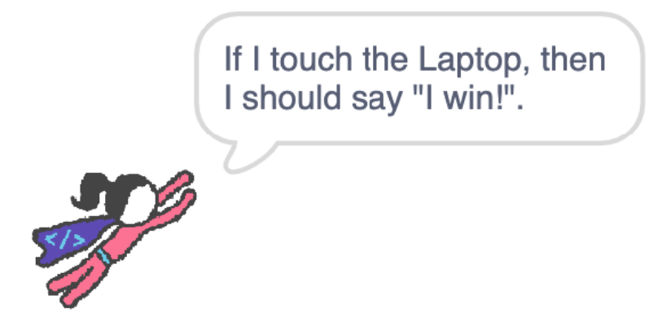

In this codelab, you'll make a maze game.
What you'll learn
- Quick review of Scratch.
- How to incorporate micro:bits into a Scratch game!
Open the starter project and click Remix.

Before we begin, we must add the micro:bit extension so that we can incorporate the microcontroller into our project. To do this, click on the extensions block in the bottom right corner.
Once you navigate to the extension page, choose the micro:bit extension:
When trying to add this, you'll get a box that is searching for your micro:bit.

A successful search should look as shown below.

If your screen doesn't look like this/your micro:bit doesn't show up on the screen, check the following things:
- Is your micro:bit on? Check that it is either connected to your computer and/or to the battery pack.
- Is your ScratchLink activated? Scratch cannot connect if ScratchLink is not on and running.
Once you see your micro:bit on the screen, click the blue Connect button followed by the blueGo to editor button to keep working on your project. Both of them are in the lower right-hand corner of this pop-up box. This is how your screen should look before you click the "Go to editor" button.
After you add the micro:bit extension, you should see a micro:bit section in your Code list. This will show these blocks:
All of these block shapes should look familiar because they're all similar to blocks that we've worked with in the past. We can see hat blocks that trigger events, namely starting sections of code. We also see hexagonal blocks, which are used for sensing and conditional statements. Finally we see rounded blocks which can be used as variables and our typical action blocks that can be used for actions, motions, looks, and more!
Now, we are going to program the Coder sprite to move according to how the micro:bit moves.
Steps
- When the micro:bit is tilted right and left, make the Coder girl move inn that direction along the x (the x-axis corresponds to "right" and "left"). We recommend using some of these blocks, combined with other blocks that you've already used in the past.

- Repeat this for the vertical direction (change y). It might take some experimenting with what Scratch considers "front" and "back" tilt to be.
Check yourself: If you run the program with the green flag, does your Coder girl move how you want her to?
Now we will check if the superhero is touching the wall and lose the game if she is

Steps
- Have the superhero check if she's touching the black wall, and say "game over" if she is
- If the game ends, the superhero should also return to the starting position (-190, -115) so the game can restart.

- This check should happen over and over while you're playing the game (remember the forever loop!)
- She should start checking if she's touching the wall when the game begins (remember Hat blocks!)
Scratch is very sensitive to the micro:bit tilts, so it might be very difficult to make this sprite go through the maze without touching the walls. Try to think of creative solutions to make the game more do-able! It can be anything you want (even if it means replacing the step you just did with something else).
Now we will check if the Coder girl is touching the laptop and win the game if she is
She can check if she's touching the Laptop in a similar way to how she checked if she was touching a black wall.
The Laptop is a sprite, not a color, so be sure to use the right block!
- Draw your own maze background! You can do this by changing the backdrop. If you want to make the superhero smaller, you can do that with a block in the Looks category
- Change the sprites for the player, home and goal of the maze
- Make something exciting happen when the game is lost or won
- Look at other scratch users' mazes here for more inspiration, or think of your own additons!